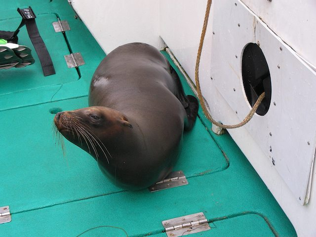

Channel Islands July 2006
Index
Previous
11 of 21
Next
Rating: 2
Badges: Keyword
Aperture: f3.6
Shutter Speed: 1/325
Exposure Bias: 0ev
Focal Length (35mm): 65mm
Focal Length: 11mm
Caption: Sick Sea Lion
Keywords: Channel Islands
Name: Channel Islands 2006-07-18 065628PM
Image Date: 7/18/06 6:56:28 PM PDT
ISO Speed Rating: ISO100
File Size: 1.27 MB
Master Location: Channel Islands 2006-07-15
